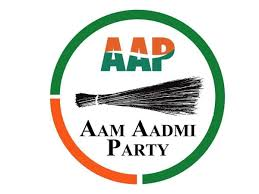

The Aam Aadmi Party
The Aam Aadmi Party is a political party in India. It was founded on 26 November 2012 by Arvind Kejriwal and his then-companions,[27] following the 2011 Indian anti-corruption movement against then government of Indian National Congress. The AAP is currently the governing party in the Indian state of Punjab. On 10 April 2023, the AAP was officially granted the status of national party by the ECI.[28] The party's election symbol is a broom.[29] The party is currently part of the coalition INDIA.[30][26]
The party came into existence following a difference of opinion between Kejriwal and activist Anna Hazare regarding the incorporation of electoral politics into the popular 2011 Indian anti-corruption movement, which had been demanding a Jan Lokpal Bill since 2011.[31] Hazare preferred the movement should remain politically unaligned, whereas Kejriwal felt the failure of the agitation route necessitated changes in the government's representation itself.[31] On 3 December 2015, the Jan Lokpal Bill was passed by the AAP government with a majority in the Delhi legislative assembly.[32][33]
Making its electoral debut in the 2013 Delhi Legislative Assembly election, the AAP emerged as the second-largest party and managed to form the government with support from INC members of the assembly.[34] Kejriwal became the Chief Minister of Delhi,[35] but his government resigned 49 days after he could not pass the Jan Lokpal Bill in the assembly, because of the lack of support from the INC.[36] After the President's rule in Delhi, in the following 2015 elections, the AAP won 67 of the 70 seats in the assembly and Kejriwal was again sworn in as the Chief Minister of Delhi.[37] In the subsequent 2020 Delhi Legislative Assembly election, AAP was re-elected as the governing party after winning 62 seats out of 70.[38] The party lost the 2025 Delhi Legislative Assembly election, winning only 22 seats, a sharp decline from the 62 it won in the previous election. Kejriwal and several other notable leaders lost their seats.
Outside Delhi, the AAP cemented its popularity when it emerged as the principal opposition party in the 2017 Punjab Legislative Assembly election after securing 20 seats. Later, in the subsequent 2022 Punjab Legislative Assembly election, AAP was elected as the main governing party after winning 92 seats.[39][40] Following this, its member Bhagwant Mann was sworn in as the Chief Minister of Punjab.[41] In December 2022, the party emerged as the third front in the politics of Gujarat after 2022 Gujarat Legislative Assembly election. It secured 12.92% of the votes polled and five seats in the Assembly.[42] Apart from Gujarat, AAP is also accorded the status of state party in Goa.[43][44] In the 2024 Jammu and Kashmir Legislative Assembly election, AAP opened its account in Jammu and Kashmir (union territory) by winning of Mehraj Malik of AAP from Doda Assembly constituency seat in Jammu region by a margin of 4538 votes, making him the first AAP MLA of Jammu and Kashmir (union territory).